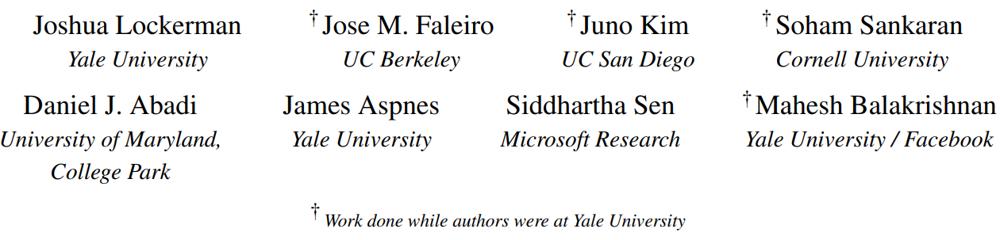
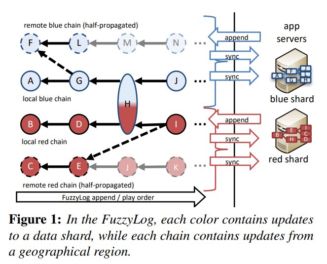
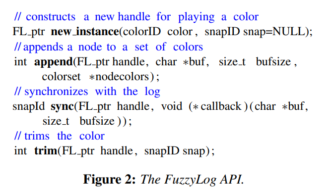
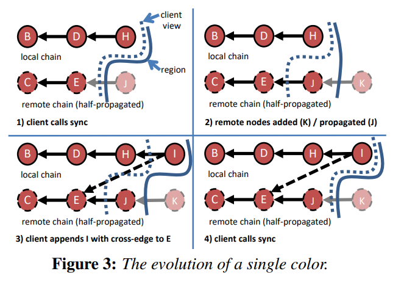

FuzzyLog A Partially Ordered Shared Log
本文是由耶鲁大学的学者们设计提出的一种偏序 shared log。shared log 可以让构建分布式应用变得更加简单，在其之上构建的分布式应用可以保证强一致性，错误恢复，并且所需要的代码更少，比如基于 Shared log 的 zookeeper 只需要 1k 代码。
Introduction
本文是由耶鲁大学的学者们设计提出的一种偏序 shared log。shared log 可以让构建分布式应用变得更加简单，在其之上构建的分布式应用可以保证强一致性，错误恢复，并且所需要的代码更少，比如基于 Shared log 的 zookeeper 只需要 1k 代码。（这里要强调一点，Shared Log是提供给上层的一种 Log API，使用这种API可以简化应用一致性、容错恢复等设计。）
shared log 的这些好处主要是由 total order 带来的。为了实现这种全局的 total order，shared log 的实现需要使用一个专门的 sequencer 负责记录各个分布式的系统的日志。这样集中式的 total order 模型也带来了一些问题：
- 中心化的 sequencer 会成为性能瓶颈，严重限制了可扩展性。
- 在地理位置不一的分布式场景下，这种全局 total order 实现几乎不现实。因为地理位置不一，sequencer 和各个分布式系统之间的连接难以保证。
- 很多场景下并不需要全局的 total order，在一致性上不够灵活，大多数场景下因果一致性已经足够。比如两个不想关的数据的修改访问是完全独立的，这应该是可以并行的
根据以上的问题，本文作者提出了以下的疑问：
Can we provide the simplicity of a shared log without imposing a total order?
本文则是对作者在 Introduction 种提出的这个疑问的一个回答，shared log 和 中心化的 total order 并不是绑定在一起的，使用偏序的 shared log 既能带来 shared log 的好处（错误恢复，构建应用更加简单，一致性保证更容易），同时又能避免基于 total order 的 shared log 所带来的以上的问题。
FuzzyLog Design
FuzzyLog 针对的场景主要有两点：
- 应用的状态可以在逻辑上进行切分，比如不同的 client 访问不同的数据。Alice 和 Bob 的数据在没有发生关联的时候，各自可以独立的更新自己的数据。特别的，如果应用没有将状态进行切分或者无法切分，FuzzyLog 的数据分片视作只有一个。
- 应用部署在地理上不同的地区，比如亚洲和美洲，对一致性的要求不是那么高，想要灵活的调整一致性。

FuzzyLog 的设计主要如上图所示。图中展现的是 FuzzyLog 在一个区域内的视图。
- 每一个颜色代表一个数据分片，红色是一个数据分片，蓝色是另一个数据分片。
- 每一个数据分片由一系列的全序链构成，每一个区域对应一个链，上图一个有 FuzzyLog 分布在两个区域（local region 和 remote region），因此每个颜色有两条链。
- 每条链上的节点的发生顺序是确定的，在图中使用有向边表示。边由发生在后的节点指向发生在前的节点。
- 不同链之间的因果关系由虚线边表示，对于没有因果关系的链，可以并行的更新。
- 每一个区域都拥有完整的 FuzzyLog 的副本。client 只在本区域的链上进行操作，上图中，无论是蓝色的还是红色的client，都只会更新 local chain，而 remote chain 则会在后台空闲的时候进行传播更新。因此，每个区域的 FuzzyLog 只有本区域的链一定是最新的，而其他区域的链则不一定是最新的，比如上图虚线的节点中，半透明的节点尚未传播到本区域。
FuzzyLog API
FuzzyLog 的 API 保持 SharedLog 的简洁性，只有 4 个：new_instance、append、sync、trim。

new_instance
FuzzyLog client 调用 new_instance 来创建一种颜色的实例。如果提供了 snapID，则 new_instance 在播放 log 的时候会跳过该 snapshot（类似于 checkpoint）。
append
在每次操作一个对象之前，都需要将记录该操作的节点添加到对应的链后面，该节点指向该链的最后的节点；同时，该节点需要指向所有该颜色的链的上一次播放的节点。
简单来说，新添加的节点在顺序上发生在本地已经记录下的节点之后。
sync
sync 会在本地当前所有的节点之上，将所有上次 sync 没有同步的节点进行播放（即 sync 过程中添加进来的节点并不会播放）。当所有新节点都已经播放完成之后，sync 返回一个 snapshot 的 ID。
trim
trim 操作会将一个 snapshot 丢弃，如果在该 snapshot 中有节点有其他颜色，该节点不会被删除（这里还是挺显而易见的）。

Figure 3 展示的是一个单颜色（没有数据分片）的 FuzzyLog 的几个过程。 虚线左边是 client 看到的视图，实线左边是本地 FuzzyLog 的副本状态。第一个图中，client 调用 sync 将视图同步至本地 FuzzyLog 最新的状态，所以虚线和实线是同一条线。第二个图中，remote chain 添加了一个节点 K，同时节点 J 传播到了本地的 FuzzyLog，因此此时，本地 FuzzyLog 副本状态比 client 视图多一个节点 J。第三个图，本地的 client 在 本地的链上添加了一个节点 I ，由于 client 的视图里，local chain 的最后一个节点是 H，remote chain 的最后一个节点是 E（节点 J 尚未同步到 client 的视图里），所以 节点 I 在 节点 H 和节点 E 之间都有一条有向边。最后一个图，client 调用 sync，本地将会播放 节点 I 和 节点 J，于是 client 视图和本地 FuzzyLog 变成了一致。
FuzzyLog Applications
FuzzyLog 的抽象基本上就像上面所介绍的一样，但是应用该如何使用 FuzzyLog 呢？本文作者专门再第四章介绍了几种构建在 FuzzyLog 之上的几个应用。
本文介绍的几个应用都是 in-memory 的 key-value store.
Simple Application：LogMap
LogMap 一共只有 193 行代码，LogMap 的数据只有一个数据分片，并且所有的 server 都在同一个 region。在这种情境下，所有的 key-value store server （FuzzyLog client）都在同一个 shared log 上操作，和传统的 shared log 没有区别。get 操作简单的等待 sync 同步状态之后，返回对应的 value，以确保获取本地视图中最新的值；put/delete 操作在本地 FuzzyLog 中添加节点，并调用 sync 更新 server 视图，之后返回。
LogMap 的设计简单，但是能够提供持久性、高可用性、强一致性、并发控制以及错误恢复。不过由于 LogMap 没有利用数据分片，因此可扩展性差。
Scalable with atomicity within a region
ShardedMap
ShardedMap 的实现也只有 193 行代码（在 LogMap 的基础上进行了简单的修改），每个 ShardedMap server 存储 key-value 的一个 shard（即一种颜色），server 在数据更新的时候，会将对应颜色的 FuzzyLog 进行修改。
TXMap
TXMap 支持 read/write transactions，并且提供了事务的强隔离性。在 TXMap 中，每个 server 会以 read set，write buffer 的形式执行数据的更新（并不会直接应用在数据上）。当一个 transaction 提交的时候，server 在 FuzzyLog 对应的 colors 上添加一个 intention 节点。该节点会传播给其它的 region，本地节点也可以通过 sync 同步该节点。
当一个 server 播放到 intention 节点时，会检查该 transaction 对应的读写操作是否与本地对应的 shard 冲突，如果冲突了，则添加一个 no 节点，否则在 FuzzyLog 上添加一个 yes 节点。
当且仅当所有相关的 shard （color）都添加了 yes 结点之后，该 transaction 才可以同步到应用数据中。
Tolerating network partitions
CAPMap
CAPMap 可以保证在没有 network partition 的情况下时，提供强一致性；在有 network partition 的情况下使用因果一致性。
- 在没有 network partition 时，CAPMap 将新的 node 通过代理服务器添加到一个 primary region 的 FuzzyLog 上，然后调用 sync 直到本地看到新的节点。（和传统的 shared log没有区别）
- 在有 network partition 时，CAPMap 停止将新节点通过代理服务器发送到 primary region，而放在本地，并做上标记。等 primary region 恢复正常之后，将节点传给 primary region，之后正常使用代理服务器的版本。
Dapple：A FuzzyLog Implemetation
单节点的操作和上述的设计一致，需要注意的是，FuzzyLog在进行多节点原子插入的时候，需要保证各个节点append的顺序一致，所以需要使用一种 total order 的一致性算法，在实现中，本文作者选择了 Skeen’s algorithm
Skeen’s Algorithm
Skeen 算法分为两个阶段，这一部分后面再补充吧